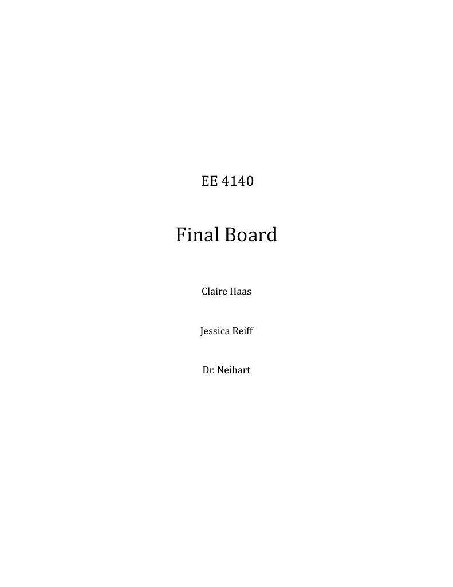

EE 4140 Final Project: RF Board
December 2025

This project combined all the RF subsystems designed in EE 4140 into a single PCB, including DC Bias, Amplifier, Oscillator, and Resonator circuits.
My Role
Collaborated on board design, simulation, fabrication, and testing of the full RF board.
Skills / Knowledge Gained
- RF circuit design and integration
- PCB fabrication and soldering
- Simulation using ADS and MATLAB
- Testing with multimeters and network analyzers
- Troubleshooting real-world fabrication issues
Resources Used
- ADS software for simulation
- Lab test equipment: multimeter, signal generator, network analyzer
- PCB fabrication and soldering tools
- Course lab reports and prior lab designs
Lab Report
